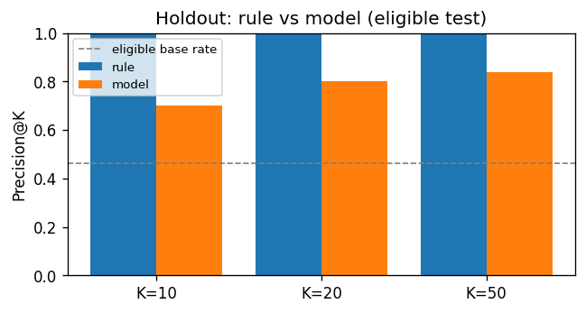
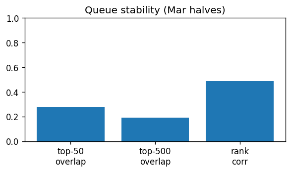
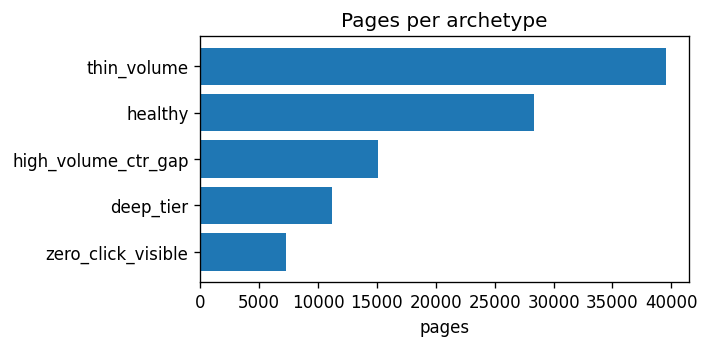

A FlyRank-style content case study: out of thousands of pages that get Google impressions, which weak-CTR pages should a human open first? We compare a past ctr_gap rule with a logistic model on anonymized Mar–Apr → May 2026 data.
Which pages should a reviewer open first when CTR looks weak for their Google position
tier? We use ~52k eligible pages from the FlyRank ML Internship warehouse
(Mar–Apr 2026 features → May 2026 label; imp_prev >= 500).
A logistic regression ranked by client-holdout GroupKFold is compared to a transparent
past-ctr_gap rule. Mean Precision@50 is about 0.945 vs 0.775
(base rate ≈ 0.513), and the top-10 lists barely overlap (0/10). The output is a
decision-support review queue — not a promise that edits will raise clicks.
Problem. Many pages earn impressions in Google Search but under-click relative to other pages at a similar average position. Reviewers cannot open every URL; they need a short, ranked list of where CTR looks weak for the tier, with a suggested next step.
Research question. On a fixed past→future warehouse slice, which pages
should a reviewer open first when CTR looks weak for their Google position tier — and
does a simple supervised ranker beat a transparent past-ctr_gap hand rule
at putting May underperformers near the top of that list?
Decision supported. A daily (or weekly) review queue: open the top-K pages, then choose among rewrite title/meta, check tracking/measurement first, treat as a ranking (not CTR) problem, or monitor. The score orders attention; it does not auto-edit content or promise click lift.
Why this matters. Precision@K on the queue is the right product metric: false alarms waste editor time; missed underperformers leave easy wins unread. Client-grouped validation matters because pages from the same site share templates and tracking quirks.
Claim ladder. Observed / measured / directional /
decision-support. We do not claim causal proof that
an edit raises CTR, access to Google’s ranking algorithm, or that past
ctr_gap alone is the ground truth for May.
Release.
FlyRank/internship-warehouse
on Hugging Face (gated, instant approval). Build id:
flyrank_pseudonymized_warehouse_release_v20260703. Source system: FlyRank
central_data_warehouse, dates roughly 2025-01-27 → 2026-06-30.
Tables used.
fact_content_daily_performance (~78.8M rows; grain
report_date × client × content, month partitions) for past features and the
May label. Optional joins to dim_clients / dim_content use hash
IDs only — never as model features. We did not use
fact_content_query_90d (fixed 90-day query mix overlaps the label window) or
fact_content_daily_performance_sample (June 2026 sealed end of panel).
Date windows. Features from month=2026-03 +
month=2026-04. Outcome / label from month=2026-05. Eligible
frame: past ∩ May with imp_prev >= 500 → 52,001
page-rows (~41 clients). Unit of analysis: one page (content_hash_id) under
one client (client_hash_id).
Warehouse gotchas we respected. Rate columns are percentage points
(ctr = 0.76 means 0.76%). gsc_avg_position = 0 means missing,
not rank zero. GA4 zeros with ga4_data_available = FALSE are not “no
engagement.” Client history depth varies — we stay on mid-panel months, not the June
sample.
trend_direction / trend_pct (other lane; label-adjacent risk)ctr_gap / tier median / May columns as model featuresimp_prev < 500) from the ranked queuePublic-safe. No client names, private domains, raw URLs, or raw private queries — only scrambled hash IDs and aggregate metrics.
Expected CTR differs by position tier; CTR is noisy below ~500 impressions; same-client pages share site patterns, so validation must group by client; past features must not include May outcomes.
Five fields knowable from Mar–Apr at review time:
imp_prev, ctr_prev, pos_avg_prev,
engagement_rate_prev, position_tier. None are the May label.
is_ctr_underperformer: May CTR below the median CTR of the page’s May
position_tier, with enough May impressions. Proxy for “worth a look,” not
proof the page is broken.
Rank eligible pages by past ctr_gap (past tier-median CTR −
past page CTR), tie-break imp_prev. Transparent hand rule on this
out-of-time frame — not perfect by construction (the label is May). On the eligible pool
receipt: P@10 = 0.80, P@20 = 0.85, P@50 = 0.78 (base rate ≈ 0.515).
Logistic regression (random_state=42, max_iter=1000) ranks by
P(is_ctr_underperformer). Past ctr_gap is never a model feature.
Model queues and model-vs-rule numbers are in Results.
Client GroupKFold (n_splits=4): train clients never appear
in that fold’s test. Published skill number = mean Precision@K across folds
(~13,000 eligible test pages/fold). Queue scores are client-holdout
(each page scored only when its client was held out; no all-client refit). A random page
split is sensitivity-only. Training with May ctr_gap_next drives ROC AUC to
1.0 (trap); honest five-feature AUC stays lower (~0.76). Forbidden in the model: past
ctr_gap, May columns, trend_*, IDs.
Rule and model are locked to the same evaluation contract. If any line differs, the table is not a fair fight.
imp_prev >= 500).imp_prev.
Model client-holdout queue, how it differs from the past-ctr_gap
rule, then GroupKFold Precision@K. Client GroupKFold mean; eligible pool
imp_prev >= 500; tie-break imp_prev. Base rate
≈ 51.3%. Top-10 model vs baseline overlap is 0/10 —
different review orders. Precision@K asks: of the top K pages in the ranked list, what
share truly have the May label = 1?
| Ranking | P@10 | P@20 | P@50 |
|---|---|---|---|
| Base rate (eligible) | 0.513 | 0.513 | 0.513 |
Baseline past-ctr_gap rule |
0.85 | 0.74 | 0.775 |
| Logistic regression | 1.00 | 1.00 | 0.945 |

ctr_gap rule at
Precision@10 / @20 / @50.
How to read this. The model wins Precision@K on the same rows and folds.
The rule is still the honest hand baseline — not a leaky same-month ceiling. Beyond the
Precision@K lift, client-holdout model ranks surface high-stake underperformers that the
fixed past-ctr_gap rule often places much lower (dual ranks in the Week-7
playbook CSV).
Safe claim. On Mar–Apr → May pages (imp_prev >= 500),
under client GroupKFold, logistic regression measured mean Precision@K above the base
rate and above the past-ctr_gap baseline. A random page split can look
different; we publish the grouped number. This is decision-support ranking, not proof that
editing raises clicks.

Ship the model client-holdout queue (not the past-ctr_gap
list). Rank eligible pages (imp_prev >= 500) by the client-holdout model
score, attach a reason code → action
(refresh_and_review_ctr / check_tracking_first /
ranking_not_ctr / monitor), then open the top of the list.
Before acting: confirm enough past impressions, compare past CTR to the own-tier past
median, rule out zero-click SERPs, and verify tracking.
Shares below are of the 52,001 eligible pages. Buckets are mutually exclusive (fixed if/else order).
| reason_code | Share | Suggested action |
|---|---|---|
high_visibility_ctr_gap |
~30% | refresh_and_review_ctr |
zero_click_visible |
~3% | check_tracking_first |
deep_tier_ctr_gap |
~9% | ranking_not_ctr (not a CTR fix) |
general_ctr_monitor |
~58% | monitor |

monitor. Spend review time on
high_visibility_ctr_gap and zero_click_visible first.
Cost framing (assumption). ~15 minutes per review. Model top-50 at mean P@50 ≈ 0.945 → ~47 real May underperformers vs ~26 at base rate.
No-go. Do not auto-publish rewrites; do not prune/merge without a human;
do not act on thin-volume pages; do not treat deep-tier as a CTR fix; do not promise click
lifts; do not use past ctr_gap / May columns / trend_* as model
features; do not ship the raw queue as a client audit.
Repo.
rimlazrek1/flyrank-internship
— notebooks under work/notebooks/.
HF_TOKEN in a local .env only if you need to rebuild warehouse queries. This paper page reads committed receipts; regenerating them needs the warehouse notebooks. The capstone notebook reads JSON/PNG receipts only (no warehouse pull).w03_data_contract.ipynb → w04_baseline_score.ipynb → w05_model.ipynb → w06_validation_audit.ipynb → w07_action_playbook.ipynb → capstone.ipynb.random_state=42. Split: client GroupKFold, n_splits=4. Metrics/figures: work/outputs/ (queue CSV is gitignored; top-10 previews live in the capstone notebook).Public-safe check. Outputs use hash IDs only — no client names, private URLs, or raw queries.
Built on the FlyRank ML Internship dataset.
Thanks to the FlyRank internship program for the warehouse release, lane framing, and evaluation standards that keep claims public-safe and decision-support honest.